INO
@aceofgenz
Your favorite OT5 Midzy creator. Daily content on every platform, weekly FMOs on @INOT5 (YouTube only) — join the Discord below. DMs open for ads & promos 🖤
OT5 MIDZY
RYUJIN BIAS
Your favorite OT5 Midzy creator. Daily content on every platform, weekly FMOs on @INOT5 (YouTube only) — join the Discord below. DMs open for ads & promos 🖤
meet the members
🔴 bias spotlight: ryujin
🖤 leave INO some appreciation
A public, permanent thank-you wall — once posted, a message can't be edited or deleted, so keep it kind! Not the place for chat, requests, or complaints.
midzy moodboard
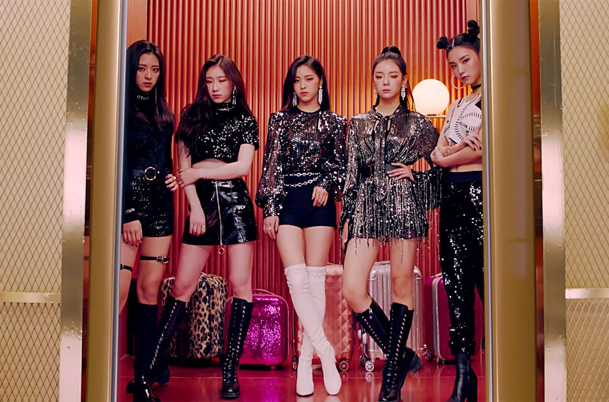
DALLA DALLA (DEBUT) ICY WANNABE NOBODY LIKE YOU (SELFIE MUSIC VIDEO) NOT SHY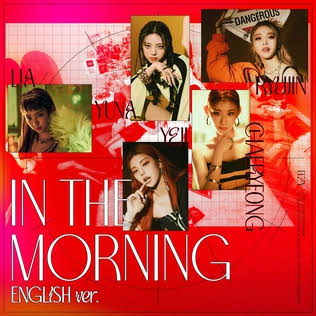
IN THE MORNING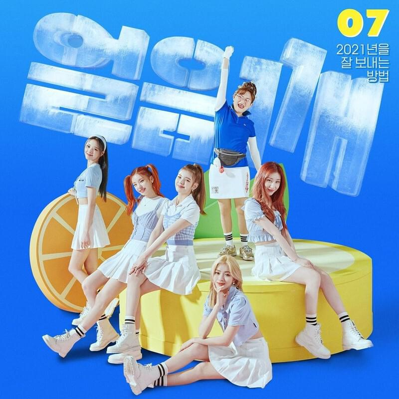
BREAK ICE (COLLAB WITH KIMDAVI) LOCO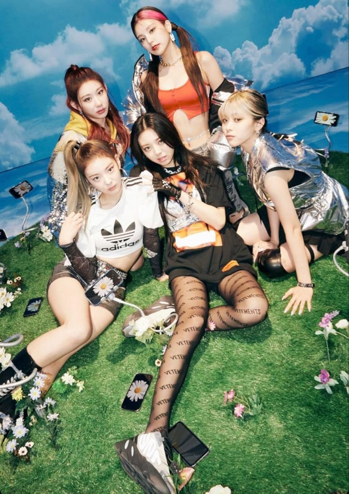
SWIPE WANNABE (JAPANESE VERSION) VOLTAGE (JAPANESE DEBUT)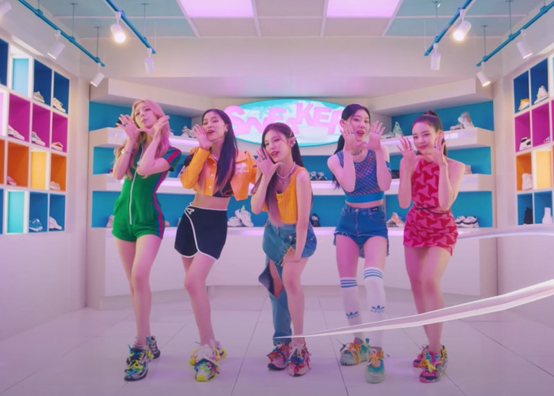
SNEAKERS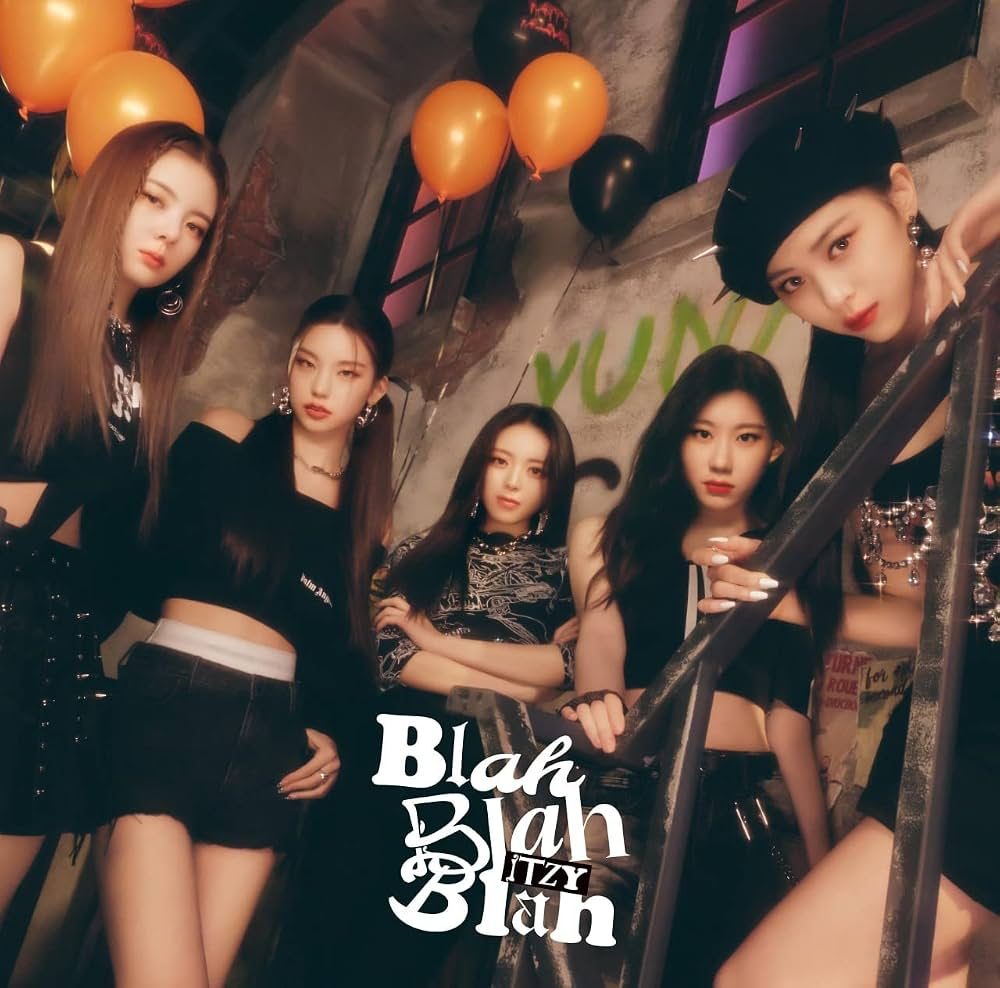
BLAH BLAH BLAH (JAPANESE) BOYS LIKE YOU (ENGLISH PRE-RELEASE) CHESHIRE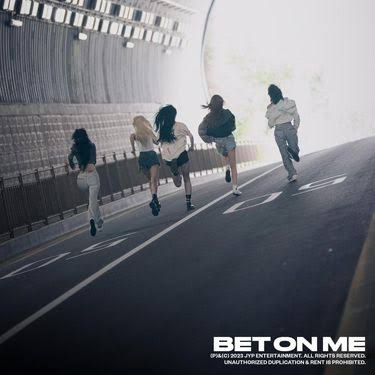
BET ON ME (PRE-RELEASE)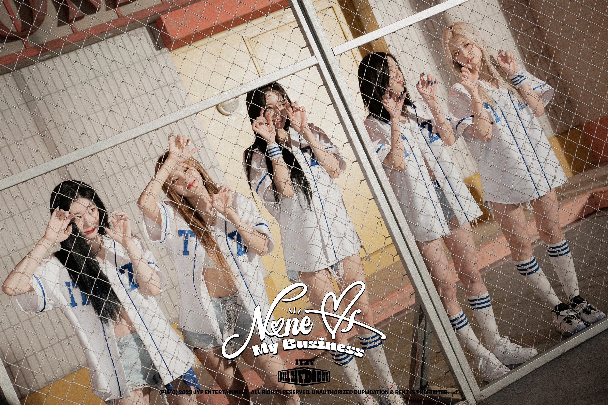
NONE OF MY BUSINESS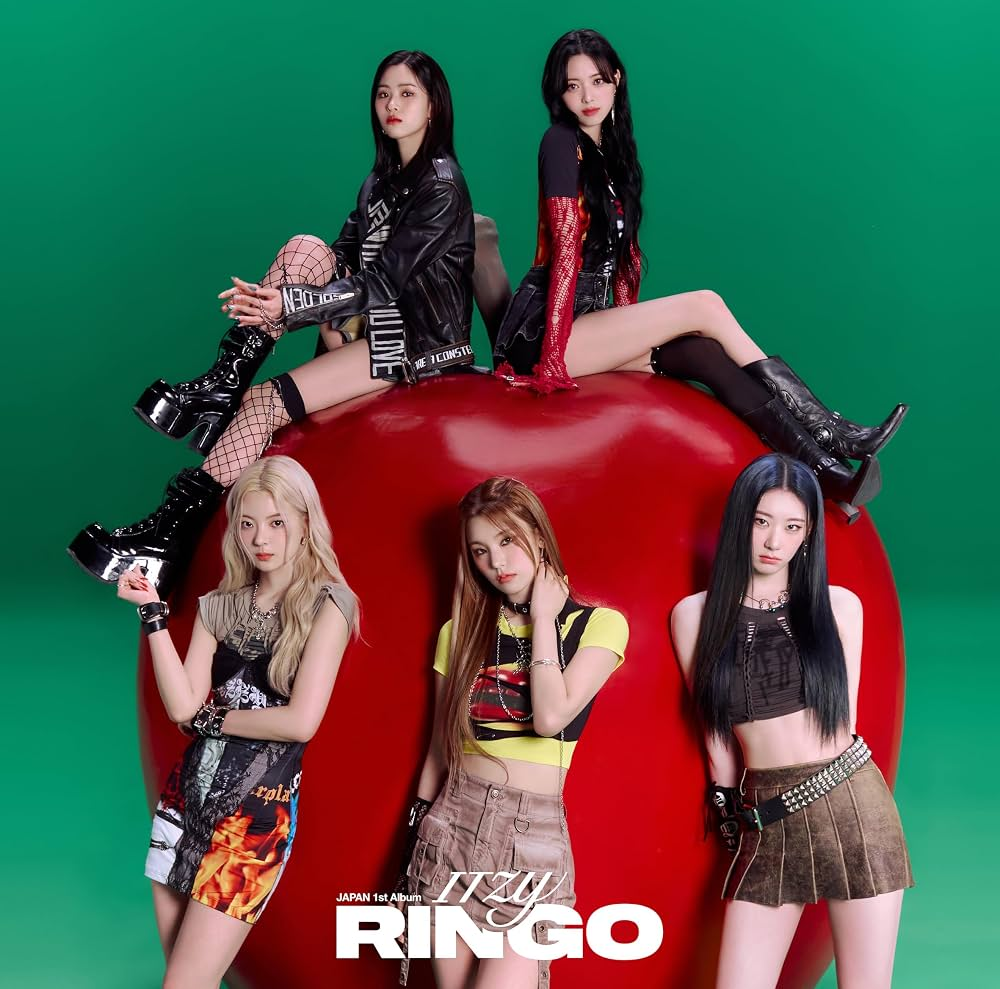
RINGO (JAPANESE) BORN TO BE (PRE-RELEASE) MR. VAMPIRE (PRE-RELEASE) UNTOUCHABLE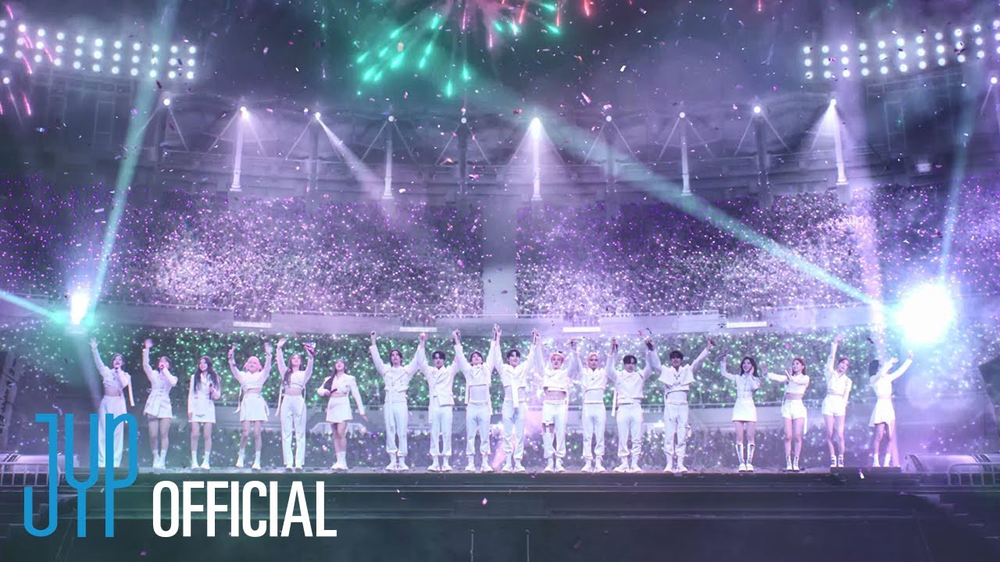
LIKE MAGIC (COLLAB: J.Y. PARK, STRAY KIDS, NMIXX) ALGORHYTHM (JAPANESE) GOLD
IMAGINARY FRIEND
YEJI · AIR
GIRLS WILL BE GIRLS
GOLD
IMAGINARY FRIEND
YEJI · AIR
GIRLS WILL BE GIRLS
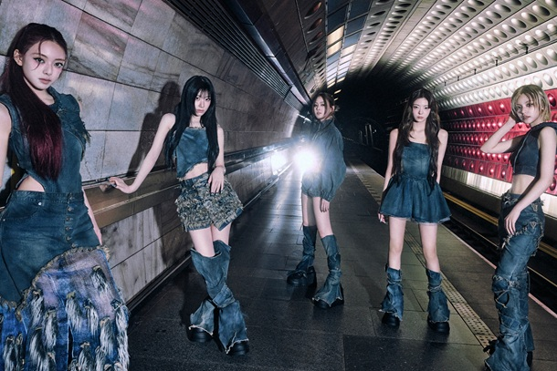
TUNNEL VISION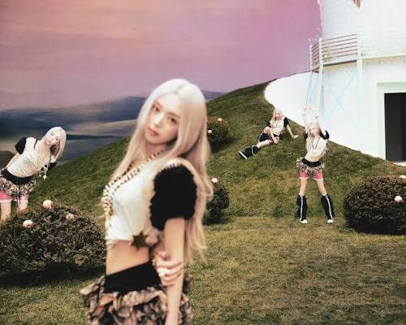
YUNA · ICE CREAM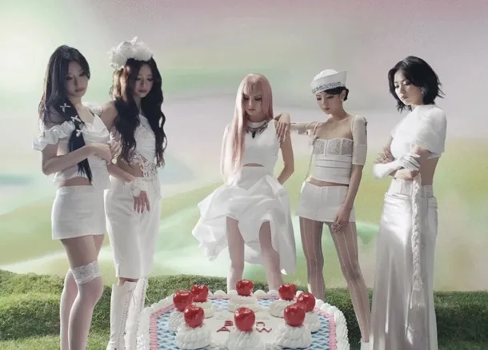
MOTTO